En août 2015, 50 jeunes français décolleront pour les 43e Worldskills, les jeux olympiques des métiers, à São Paolo. Tu n’en as jamais entendu parler ? Alors suis nous dans cette infographie interactive pour découvrir cette grande compétition. Dans
quel pays habite le champion du monde de coiffure ? Comment la France prépare-t-elle ses jeunes ?
Entre dans le monde des champions !
1946 L'idée des Olympiades naît dans la tête de José Antonio Elola Olaso
1950 La 1ère compétition est nationale, a lieu à Madrid et rassemble 24 participants
1953 La France participe à ses premières Olympiades
1995 La France accueille pour la première fois les Olympiades à Lyon pour la 33ème édition
Et comment ça se passe alors ?
Les sélections régionales
Cette étape élit le meilleur candidat de chaque métier par région afin de constituer les équipes régionales qui s’affronteront lors des finales nationales.
Les sélections nationales
Elles réunissent les meilleurs jeunes de toutes les régions. Ils intègrent l’équipe de France et participent à la compétition mondiale.
Les sélections mondiales
La compétition mondiale des métiers est organisée tous les deux ans dans l'un des pays membres de Worldskills International.
Digne des Jeux Olympiques, la compétition mondiale se prépare par un entraînement complet.
Il te faut
Une forte motivation
De la volonté
Une maîtrise de soi
Du dynamisme
Aimer les challenges
Pays participants
Pays participants
Pays participants
Pays participants
Pays participants
À l'international, qui participe et qui sont les champions ?
participants
pays d'accueil
La france revient avec ... médailles
Vainqueur
Deuxième position
Troisième position
Pays participant
Toi aussi découvre les meilleurs de chaque métier
-
- Alimentation
- Boulanger
- Cuisinier
- Pâtissier/confiseur
- Service de restauration
- 
- 
-

- Maintenance
- Entretien d'aéronef
-

-
- Végétal
- Fleuriste
- Jardinier/paysagiste
2005
2007
2009
2011
2013

Les différents pôles de métiers
Et la France alors ?
lors les sélections nationales
3000 repas par service,soit 6000 repas par jour
75 000 visiteurs sur les 3 jours de compétition dont 30 000 jeunes d’établissements scolaires
2,5 m3 de bois massif
200 kg de chocolat
24 voitures sur le Pôle automobile
1 hélicoptère Maintenance aéronautique
31 janvier 2015
Les chiffres clefs de la finale nationale à Strasbourg !
Résultats des 43es Finales Nationales de la WorldSkills Competition, qui se déroulaient depuis ce 29 janvier à Strasbourg. Parmi les médaillés se trouvent donc les futurs membres qui constitueront l’Équipe de France des Métiers, qui s’envolera pour le Brésil du 10 au 16 août prochains, défendre les couleurs de la France lors de l’épreuve mondiale de la WorldSkills Competition.
En Pays de la Loire
Pays de la Loire 1er nationale
En Pays de la Loire
Pays de la Loire 1er National
20,5% des lauréats sont des femmes
Sur 100% des lauréats régionaux
Apprentis 53%
Étudiants 16%
Salariés 14,5%
Lycéens 10,5%
Contrats Pro 5%
Ouvriers 1%
2015
22% des meilleurs apprentis de France sont Ligériens
17 médailles lors de la finale nationale à Strasbourg
7 médailles 7 qualifications direction Brésil
Interview d'Élisabeth Vincent
Responsable de la promotion de la formation professionnelle à la Chambre régionale des métiers et de l'artisanat des Pays de la Loire
La région Pays de la Loire représente une grande partie de l’équipe de France, jusqu’à un quart de l’équipe en 2009. Elisabeth Vincent, chargée de mission à la chambre de métiers et de l’artisanat de région des Pays de la Loire revient sur les raisons qui font de la région l’une des plus dynamiques de France.
La formation par alternance
Traditionnellement et comme l’Alsace, la Région des Pays de la Loire investit depuis des décennies dans la formation par alternance. Ainsi, la relation tripartite : jeune / centre de formation pour apprenti / entreprise constitue la combinaison gagnante pour ce type de concours où la connaissance et la maîtrise des fondamentaux de chaque métier sont cruciales. Les centres de formation sont globalement bien équipés et leurs matériels sont renouvelés régulièrement. Les formateurs sont bien formés et maintiennent régulièrement le lien avec l’entreprise.
L’organisation
Ce qui renforce également le succès de notre région les soirs de finales nationales, c’est sa propre organisation qui s’appuie sur des structures et des experts qui connaissent bien les formations dispensées, leurs acteurs et les entreprises de chacun des secteurs. De la sélection en établissements, à l’organisation de pré-sélections départementales ou interdépartementales aux sélections régionales, ce sont en moyenne trois sélections qui permettent aux jeunes Ligériens d’accéder aux finales nationales.
La préparation
Je voudrais insister sur le fait que la préparation physique et mentale proposée aux jeunes avant les finales nationales est une initiative heureuse de notre région. Travailler l’esprit de groupe, apprendre à se concentrer, faire le vide autour de soi, respirer et se ressourcer, est un atout majeur pour les candidats mais surtout pour leur vie future.(…) Quel que soit le résultat de la compétition, tous ont le sourire aux lèvres car tous ressortent gagnants de l’aventure. Les Olympiades des Métiers, c’est avant tout une grande aventure humaine !
Argent aux nationales 2012
Bijouterie
« Aujourd’hui je ne travaille pas en entreprise car la conjoncture actuelle ne me le permet pas. Je suis installée à Reims pour être près de Paris car c’est là bas qu’on trouve du travail pour les bijoutiers.
J’aimerais ouvrir ma propre boutique en bijouterie. Si ça ne marche pas, j’ai envie de travailler avec des enfants.
A 8 ans quand je suis sortie de l’atelier d’un ami bijoutier de mes parents, j’ai réalisé que c’est ce que je voulais faire plus tard et j’ai pas démordu. C’est un métier de passion. »
11 : Le nombre de fois où Madrid a accueilli les Olympiades
L'entraînement de l'équipe de France se faità l'INSEP de Paris
Le Saviez Vous ?
2013 : 90% des médaillés d'or sont des hommes
La Bourgogne n'a jamais remporté le prix de sommelier
Pour qu'un métier soit retenu et mis en compétition il faut au moins 12 pays participants
Abou Dhabi 2017 : Pour la 1ère fois le mondiale au Moyen Orient
Compétition réservée aux moins de 23 ans
Crédits
Sources : WorldSkills International, WorldSkills France